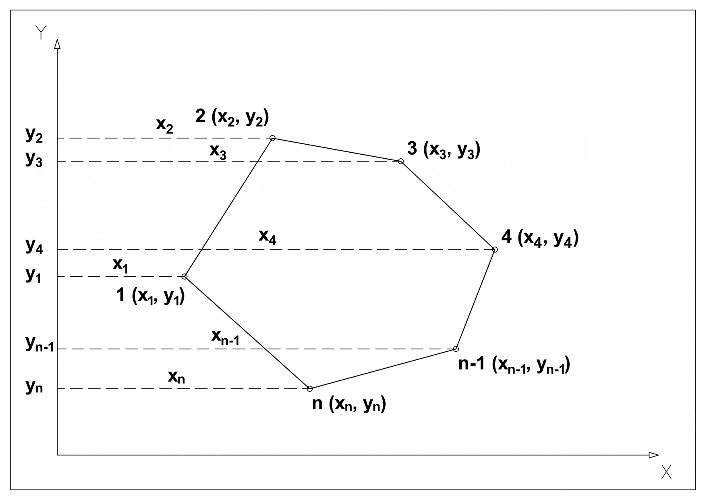

MySQL database which stores buildings equipped with sensors and provides data analytics functions such as damage estimates following earthquakes
Check out the code on GitHub (🇮🇹) Full project documentation is available here (🇮🇹) Restructured ER diagram is available here (🇮🇹) ER diagram is available here (🇮🇹) About SmartBuildings is the database of a company wihch deals with construction and renovation of buildings with the purpose of improving their security The database stores the internal structure of buildings, the jobs carried out on them and their cost, the staff and the work shifts, the materials used and the warehouse, the sensors installed in the buildings and their measurements and finally the possible calamitous events and the their effect on surrounding buildings Highlights Calculating the area of any given building
The walls of the buildings are stored as segments in the Euclidean plane

[(X1, Y1), (X2, Y2)], this means that using the shoelace formula we can calculate the area of any given building, and in the database there is a function which does just that
- Only consider the polygon formed by the external walls of the building
- Order the vertices of that polygon in either a clockwise or counter clockwise order
The database contains a function which outputs a string representing the svg plan of any given building floor:
- Blue segments are windows
- Green segments are doors
- Brown segments are generic openings
- Red dots are sensors